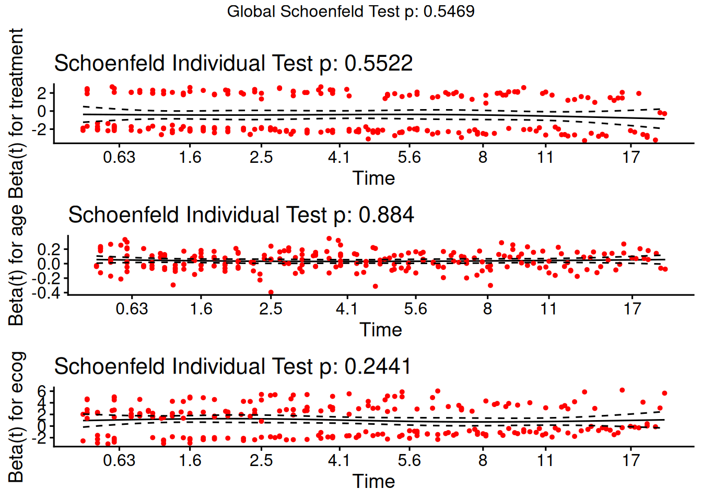
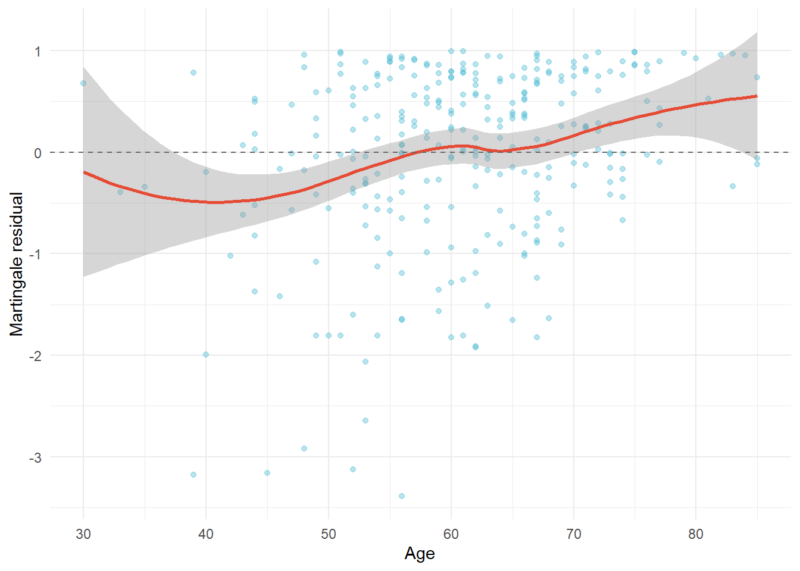

Cox Proportional Hazards Modeling in a Simulated Oncology Trial
Biostatistics
Survival Analysis
RStats
Clinical Trials
An R-based biostatistics deep dive: fitting and validating a Cox PH model on a simulated two-arm oncology trial — unadjusted vs. adjusted hazard ratios, proportional hazards diagnostics, martingale residuals for functional form, and concordance.
Author
Peekei
Published
July 13, 2026
1. Motivation
Time-to-event outcomes — death, disease progression, relapse — are the primary endpoints in most phase II/III oncology trials. They come with a structural complication ordinary regression can’t handle: censoring. Patients leave a trial alive, get lost to follow-up, or simply haven’t had the event by the data cutoff, and treating those patients as “no event = longest survival,” or dropping them outright, both bias the result. The Cox proportional hazards model gets around this by modeling the hazard — the instantaneous event rate conditional on survival to that point — without committing to a parametric shape for the baseline hazard itself.
What follows fits and validates a Cox model on a simulated two-arm oncology trial. Treatment assignment is the primary inferential target; age and baseline ECOG performance status come along as adjustment covariates.
2. Simulated Dataset
set.seed(2024)n <-300treatment <-rbinom(n, 1, 0.5)age <-round(rnorm(n, mean =60, sd =10))age <-pmin(pmax(age, 30), 85)ecog <-sample(0:2, n, replace =TRUE, prob =c(0.5, 0.35, 0.15))# True hazard ratio for treatment ~0.65 (protective), age and ECOG as nuisance covariateslinpred <-0.02* (age -60) +0.5* ecog -0.43* treatmentbaseline_scale <-8# months, baseline median survival driveru <-runif(n)event_time <- baseline_scale * (-log(u) /exp(linpred))^(1)# Administrative censoring at 24 months + independent random dropoutcensor_time <-pmin(24, rexp(n, rate =1/30))time <-pmin(event_time, censor_time)status <-as.integer(event_time <= censor_time)trial_data <-tibble(id =1:n,time =round(time, 1),status = status,treatment =factor(treatment, labels =c("Control", "Treatment")),age = age,ecog =factor(ecog, labels =c("0", "1", "2")))trial_data %>%group_by(treatment) %>%summarise(n =n(),events =sum(status),event_rate =round(mean(status), 2),median_followup =round(median(time), 1) )
# A tibble: 2 × 5
treatment n events event_rate median_followup
<fct> <int> <int> <dbl> <dbl>
1 Control 158 131 0.83 3.4
2 Treatment 142 96 0.68 5.2
A cohort of 300 patients, randomized roughly 1:1 to control or treatment, followed for up to 24 months under administrative censoring plus random dropout. Event rates came out high in both arms — 83% in control, 68% in treatment — and median follow-up to event or censoring sits at just 3.4 months for control versus 5.2 for treatment. This is a fast-moving disease in the simulation: most patients who are going to have the event have it within the first several months, which is exactly the setting where a Cox model’s constant-hazard-ratio assumption is most likely to be stressed, and exactly why Section 5 checks it directly rather than taking it on faith.
The log-rank test returns a chi-square statistic of 13.1 on 1 degree of freedom (p = 0.0003) — a separation strong enough that it would survive almost any reasonable correction for multiple comparisons. The curves split apart early, within the first couple of months, and the gap holds through the rest of follow-up rather than closing back up. That shape matters: a treatment effect that’s only visible in long-term survivors looks different on a KM plot than one that’s there from day one, and this is the latter.
4. Cox Proportional Hazards Model
We fit the treatment-only (unadjusted) model first, then the adjusted model, so the effect of covariate adjustment on the treatment estimate is visible rather than asserted.
The unadjusted hazard ratio for treatment is 0.61. Adjusting for age and ECOG moves it to 0.64 (95% CI: 0.49–0.83) — a shift of about 3.4%, small enough to read as the kind of noise you’d expect from chance covariate imbalance under randomization rather than evidence that age or ECOG were masking the treatment effect beforehand. Treatment is the primary inferential target in this analysis: conditional on age and ECOG, treated patients are dying or progressing at 64% the rate of control patients at any given moment, which is the same thing as saying the event rate drops by 36%.
Age and ECOG are in the model to adjust for baseline prognostic imbalance, not because they’re the question being asked — but it’s worth saying plainly that they came out as far from nuisance covariates in this fit. Each additional year of age carries a hazard ratio of 1.04, and ECOG climbs steeply: 1.92 for ECOG 1 versus ECOG 0, 2.66 for ECOG 2 versus ECOG 0, both comfortably below p = 0.0001. None of that changes how the analysis should be read — treatment is still the target, age and ECOG are still adjustment — but a model where the adjustment covariates are this strongly prognostic is also a model where skipping the adjustment would have been a real mistake, not just a formality.
5. Proportional Hazards Assumption
The entire model rests on the assumption that the hazard ratio for each covariate is constant over time. This needs to be checked, not assumed.
ph_test <-cox.zph(cox_model)ph_test
chisq df p
treatment 0.3533 1 0.55
age 0.0213 1 0.88
ecog 2.8205 2 0.24
GLOBAL 3.0654 4 0.55
ggcoxzph(ph_test)

Schoenfeld residuals for proportional hazards diagnostic
The global test for proportional hazards comes back at p = 0.55, and the treatment-specific test individually at p = 0.55 as well — neither close to flagging a violation. That’s worth noting given the fast event accumulation described above: a disease this aggressive, with most events happening in the first few months, is exactly the kind of setting where a treatment effect sometimes front-loads (strong early, fading later) and trips the PH assumption. It doesn’t happen here. The Schoenfeld residual plot for treatment sits flat across follow-up time with no visible drift, which means the hazard ratio estimated above is a reasonable single number for the whole follow-up window, not an average masking a changing effect.
6. Functional Form Check: Martingale Residuals for Age
Age enters the Cox model above as a linear term — convenient, but an assumption that needs checking rather than defaulting to. Martingale residuals from a model that excludes age, plotted against age itself with a smoothed trend line, are the standard way to see whether that linearity holds or whether the true relationship calls for a quadratic term, a spline, or categorization instead.
cox_no_age <-coxph(Surv(time, status) ~ treatment + ecog, data = trial_data)trial_data$martingale_resid <-residuals(cox_no_age, type ="martingale")
ggplot(trial_data, aes(x = age, y = martingale_resid)) +geom_point(alpha =0.4, color ="#4DBBD5") +geom_smooth(method ="loess", se =TRUE, color ="#E64B35") +geom_hline(yintercept =0, linetype ="dashed", color ="grey40") +labs(x ="Age", y ="Martingale residual") +theme_minimal()

Martingale residuals vs. age, with LOESS smooth, to assess linearity
cox_age_quad <-coxph(Surv(time, status) ~ treatment + ecog + age +I(age^2), data = trial_data)age_quad_test <-anova(cox_model, cox_age_quad)age_quad_p <- age_quad_test$`Pr(>|Chi|)`[2]age_quad_p
[1] 0.1797219
A likelihood ratio test comparing the linear-age model against one with an added quadratic age term gives p = 0.18 — not a small number, but well clear of anything that would suggest the linear specification is missing real curvature. The LOESS smooth in the martingale residual plot backs that up, tracking close to zero across the observed age range without a pronounced bend. Both pieces of evidence point the same way: the linear term for age in the main model is doing its job, and there’s no case here for replacing it with a spline or a quadratic.
7. Model Discrimination
conc <-summary(cox_model)$concordanceconc
C se(C)
0.6555498 0.0196938
The model’s concordance index comes out at 0.656. That’s the range you’d expect from a Cox model built around one strong binary covariate plus two moderately prognostic ones (age, ECOG) — clearly above the 0.5 floor of random ranking, but nowhere near a model that reliably orders individual patients’ survival times. The gap is structural, not a flaw to apologize for: concordance scores every pair of patients in the dataset, including pairs where both are control or both are treatment and age/ECOG are the only thing separating them, and those two variables only carry so much individual-level discriminative power on their own. A binary treatment indicator with a hazard ratio around 0.6 simply can’t push concordance much past the mid-0.6s, no matter how cleanly the model is specified.
For a 62-year-old patient with ECOG 1 — a fairly typical profile in this cohort — the model puts 12-month survival at 5% under control and 15% under treatment. Both numbers are low, which tracks with the median follow-up times from Section 2: most events in this simulated population happen well before the one-year mark, so 12 months is already deep into the tail of the survival curve for either arm. The 10-percentage-point gap is the clinically interpretable counterpart to the hazard ratio above — the HR describes a constant rate ratio, this describes what that rate ratio actually buys a specific patient by a specific point in time, and in a disease this aggressive, tripling the absolute survival probability at 12 months (even from a low base) is the kind of number a clinician would actually act on.
Takeaways
Adjusted treatment HR lands at 0.64 (95% CI 0.49–0.83) — a 36% reduction in event rate, and the headline result of this analysis. Age and ECOG sit alongside it as adjustment covariates, not co-equal findings, even though both turned out to be strongly prognostic in their own right.
Moving from unadjusted (0.61) to adjusted (0.64) HR shifted the treatment estimate by only 3.4%, which is what you’d expect from randomization noise rather than meaningful confounding. Showing both numbers, instead of just the final one, is what makes that distinction visible rather than asserted.
The PH assumption held cleanly (GLOBAL p = 0.55), notably so given this was a fast-progressing simulated disease — exactly the kind of setting where front-loaded treatment effects sometimes violate proportionality, and didn’t here.
Concordance came in at 0.656, the expected ceiling for a model carrying one strong binary covariate and two moderately prognostic continuous/ordinal ones — not a fit problem, just what concordance does with this covariate structure.
A 10-percentage-point absolute survival gap at 12 months (5% vs. 15%) is the patient-facing translation of the hazard ratio above; in an aggressive disease course like this one, that gap represents tripling an already-low survival probability, which is a number worth stating plainly rather than softening.
Age’s linear specification checked out: a quadratic term added nothing (LRT p = 0.18), and the martingale residual smooth stayed flat across the age range. Worth confirming rather than assuming, even though it ended up changing nothing about the final model.
Age and ECOG weren’t passive adjustment terms here — both came out significant at p < 0.0001 with real magnitude (ECOG 2 vs. 0 carrying close to triple the hazard of ECOG 0). They still aren’t the question being asked, but skipping their inclusion would have been a real omission, not a stylistic choice.
What makes Cox regression durable as a method is that it separates “does the covariate matter” from “what shape does the baseline hazard take.” That separation only holds, though, if proportionality actually gets checked against the data in front of you — this one passed, but plenty don’t, and you wouldn’t know either way without looking.